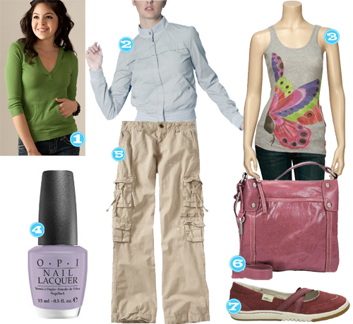

Previously, even in my teen years, I would never be one to sport glitter nails or toes. Lately that has changed. I am recently drawn to the sparklier the better type of situation, specifically on my toesies. Here are some glittery shades I’m really digging.
Nailing It In Texas
March 30, 2011 by
I was browsing the new spring nail colors recently and found some right up my alley. Â The new Texas Collection from OPI. LOVE it! Both the actual colors and the names. I cannot wait to have one of these on my little toes.
Spring on my Toes
February 21, 2011 by
The average high here in H-town has been about 80 the past few days, and I thought it was only appropriate to check out the latest in Spring nail colors. I’m LOVING on all of these!
- Charged up Cherry
- Grape Fit
- My Back Pocket
Holiday Muffins
December 23, 2010 by
All your shopping is done and all your presents are wrapped? What a gal needs now is some pre-holiday pampering before all those family members see your crusty muffins. Here are some perfect holiday shades that are sure to have you looking festive as can be.
- Amazon, Sparkle- icious
- Amazon, Something About Cherry
- Amazon, Shop Around the Clock
- Amazon, Cocoa A GoGo
- Amazon, Extra-va-vaganza
- Amazon, Glow Up Already
Nails of Steel
September 23, 2010 by

Have y’all heard about the new nail color for fall? Grey or Gray whichever way you want to spell it. Â I think I’m actually going to try it out. Â I’m usually an OPI Bubble Bath kinda gal, though I did venture into a two week experiment with lavender this summer and I will sometimes bust out the OPI Red when I’m feeling sassy. Â But I do think I want to try out this grey trend for sure, I’m just waiting on my nail place to get some greys in stock. Â Have y’all tried this out? Â What color have you used?
Spring Nail Colors
May 10, 2010 by
Currently loving on these nail colors to welcome Spring! (Well, it’s been feeling more like Summer in Houston, but you get the gist…)

- Essie, Splash of Grenadine
- OPI, Ladies & Magenta-men
- OPI, Down Out in Deco
- OPI, OPI on Collins Ave
- Essie, Pillow Talk
Sporty Spice Spring Collection, Bring On The Heat!!!
January 25, 2010 by
I’m ready for the sun. Not alot of stores have gone completely tank top, sandals and shorts, but I am definitely ready for a little spring in my step.  Here are a few pieces and items that I plan on adding to my collection.

- Francesca’s Hoodie – if it has a hoodie, put my name on it. These are thin and colorful. Totally getting it.
- Tulle Jacket – because I like to run my AC right about 80 degrees, I will still need something to cover myself through the next few months. Too cute. On another note, I have also realized that I am an addict of this sites Tulle’s Day sales. I racked in 5 nice peices for about 25.00 (including shipping). You should defintely join their mailing list if you aren’t on it already to cash in on the saving. Der was in on the last sale too and raked it in as well. It’s also fun to call random days ‘Tulle’s Day’, I owe that site for that as well!
- Roxy Tank – because its cute. That is all.
- Opi – Done out in Deco – I own this color already, so I am ahead of game on this one. I love it because its a  purple nail color, but not completely offensive. There is a very fine line there ladies. Very fine.
- Old Navy Cargos – am I too old to wear these? Probably. Will they flatter my figure? Most likely not. Are they badass because they have tiny little paint splatters on them? Hellz yes.
- Fossil Crossbody – as long as my obession with cross body bags doesn’t turn to fanny packs, I think the tipsy girls will still dig my style. I can’t decide if I need this one in red or pink?
- Simple Slippers – I’ll need these for when I feel like wearing red seude shoes. I don’t know about ya’ll but that may just be every day for me.
Nail Emergency? A Mini Mani!
November 24, 2009 by
If you are like me, you’ve run out of time to get a manicure in before Thanksgiving. So I’m going to share with you a little secret combo that will get your nails in decent shape in no time.

Brush the OPI oil all along your nail bed, rub that in. Take the Aquaphor lip treatment and dab it at the base of each fingernail, rub that all around. Then finish everything off with a little squeeze of the Neutrogena Fast Absorbing Hand Lotion. That’s it! It’s super quick and it’ll have your fingers looking 1000% better in no time. I also keep these items in my car* or purse so that if I’m out and about and in need of some nail resuscitation.
*all steps can be completed sitting at a red light (TRUE STORY)


Recent Comments